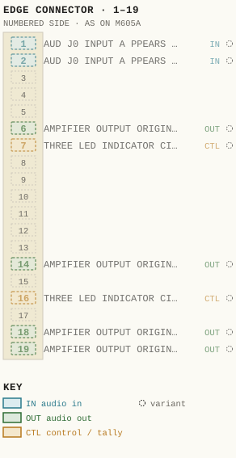
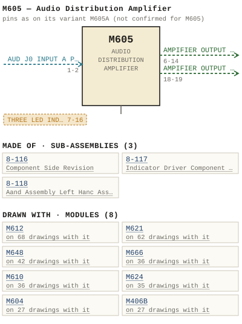

M605 — Audio Distribution Amplifier
| Type | module |
| Category | AMPLIFIERS |
| Try it | simulator & front panel · download package (zip) |
| Earliest dated evidence | 1971|4 — title-block date |
| Evidence | "APP 71" in WBS Photos-1-001/US Sales Brochure M605 functional diagram copy.jpg |
| Confidence | high |
| All years found | 1971|4 |
| Variants | M605A, M605C |
| Folder | DOCUMENTS/Done/Done - L2042 Console |
| Folder | DOCUMENTS/Done/Done - L3242 Console |
| Folder | DOCUMENTS/Internal and Eng Notes and drawings/Quotations brochures and misc papers |
Connections
What it is made of and what it is part of.
Pictures
 1975 - M605 - PRICE LIST - PRICE LIST.jpg
1975 - M605 - PRICE LIST - PRICE LIST.jpg

M605.pinout.svg

M605.connections.svg 1979 - 605-01-002 - M605A AUDIO DISTRIBUTION AMPLIFIER FUNCTIONAL DIAGRAM - DRN VINCE - ISS 1.jpg
1979 - 605-01-002 - M605A AUDIO DISTRIBUTION AMPLIFIER FUNCTIONAL DIAGRAM - DRN VINCE - ISS 1.jpg 19xx - M605 - AD - wbsps - ad - 600 series.jpg
19xx - M605 - AD - wbsps - ad - 600 series.jpg 1971 - M605 - 605-01-002 - COMPARATORS OVERLOAD REF NORMAL REF.jpg
1971 - M605 - 605-01-002 - COMPARATORS OVERLOAD REF NORMAL REF.jpg 1971 - M605 - 605-06-006 - AUDIO DISTRIBUTION AMPLIFIER COMPONENT LAYOUT.jpg
1971 - M605 - 605-06-006 - AUDIO DISTRIBUTION AMPLIFIER COMPONENT LAYOUT.jpg 1971 - M605 - wbsps - module - m605 da - back.jpg
1971 - M605 - wbsps - module - m605 da - back.jpg 1971 - M605 - wbsps - module - m605 da - front.jpg
1971 - M605 - wbsps - module - m605 da - front.jpg 1971 - M605 - wbsps - promo - m605 da - 003.jpg
1971 - M605 - wbsps - promo - m605 da - 003.jpg 1971 - M605 - wbsps - promo - m605 da - 004.jpg
1971 - M605 - wbsps - promo - m605 da - 004.jpg 1971 - M605 - wbsps - promo - m605 da - back.jpg
1971 - M605 - wbsps - promo - m605 da - back.jpg 1971 - M605 - wbsps - promo - m605 da - back_small.jpg
1971 - M605 - wbsps - promo - m605 da - back_small.jpg 1971 - M605 - wbsps - promo - m605 da - front.jpg
1971 - M605 - wbsps - promo - m605 da - front.jpg 1971 - M605 - wbsps - promo - m605 da - front_small.jpg
1971 - M605 - wbsps - promo - m605 da - front_small.jpg 1979 - 605-01-002 - AUDIO DISTRIBUTION AMPLIFIER FUNCTIONAL DIAGRAM - DRN VINCE - ISS 1.jpg
1979 - 605-01-002 - AUDIO DISTRIBUTION AMPLIFIER FUNCTIONAL DIAGRAM - DRN VINCE - ISS 1.jpg 1979 - 605-02-003 - M605A AUDIO DISTRIBUTION AMPLIFIER SYSTEM WIRING SCHEMATIC - DRN GEB - ENG GEB - ISS 2.jpg
1979 - 605-02-003 - M605A AUDIO DISTRIBUTION AMPLIFIER SYSTEM WIRING SCHEMATIC - DRN GEB - ENG GEB - ISS 2.jpg 1985 - 605-02-006 - M605A AUDIO DISTRIBUTION AMPLIFIER UNBALANCED OPERATION INTERCONNECT D - DRN JP - ENG SCHUBERT - ISS 1.png
1985 - 605-02-006 - M605A AUDIO DISTRIBUTION AMPLIFIER UNBALANCED OPERATION INTERCONNECT D - DRN JP - ENG SCHUBERT - ISS 1.png 19xx - DOC - L2042 - P05.jpg
19xx - DOC - L2042 - P05.jpg 19xx - DOC - L3242 - P05.jpg
19xx - DOC - L3242 - P05.jpg 19xx - DOC - US Sales Brochure pg 10.jpg
19xx - DOC - US Sales Brochure pg 10.jpg 19xx - 605-06-006 - AUDIO DISTRIBUTION AMPLIFIER COMPONENT LAYOUT - DRN P. Mahoney - ISS 1.jpg
19xx - 605-06-006 - AUDIO DISTRIBUTION AMPLIFIER COMPONENT LAYOUT - DRN P. Mahoney - ISS 1.jpg 19xx - 605-06-006 - M605A AUDIO DISTRIBUTION AMPLIFIER COMPONENT LAYOUT - DRN P. Mahoney - ISS 1 (2).jpg
19xx - 605-06-006 - M605A AUDIO DISTRIBUTION AMPLIFIER COMPONENT LAYOUT - DRN P. Mahoney - ISS 1 (2).jpg 19xx - 605-06-006 - M605A AUDIO DISTRIBUTION AMPLIFIER COMPONENT LAYOUT - DRN P. Mahoney - ISS 1.jpg
19xx - 605-06-006 - M605A AUDIO DISTRIBUTION AMPLIFIER COMPONENT LAYOUT - DRN P. Mahoney - ISS 1.jpg 19xx - M605 - M605.jpg
19xx - M605 - M605.jpg wbsps - promo - m605 da - 002.jpg
wbsps - promo - m605 da - 002.jpg 19xx - MF6.jpg
19xx - MF6.jpg Ward Beck Systems MF6 b.jpg
Ward Beck Systems MF6 b.jpg wbsps - module - m605 da - back.jpg
wbsps - module - m605 da - back.jpg 1987 - M605A - 605-01-002 - COMPARATORS OVERLOAD REF NORMAL REF.jpg
1987 - M605A - 605-01-002 - COMPARATORS OVERLOAD REF NORMAL REF.jpg 1971 - M605C - 605-01-004 - COMPARATORS OVERLOAD REF NORMAL REF.jpg
1971 - M605C - 605-01-004 - COMPARATORS OVERLOAD REF NORMAL REF.jpg 1987 - M605A - 605-02-003 - MGOSA AUDIO DISTRIBUTION AMPLIFIER SYSTEM WIRING SCHEMATIC.jpg
1987 - M605A - 605-02-003 - MGOSA AUDIO DISTRIBUTION AMPLIFIER SYSTEM WIRING SCHEMATIC.jpg 1971 - M605C - 605-02-013 - SYSIEM WIRING FRAME LCAD.jpg
1971 - M605C - 605-02-013 - SYSIEM WIRING FRAME LCAD.jpg 1971 - M605C - 605-02-014 - ORN PA-EE MGOSC AUDIO DISTRIBUTION AMPLIFIER.jpg
1971 - M605C - 605-02-014 - ORN PA-EE MGOSC AUDIO DISTRIBUTION AMPLIFIER.jpg 1987 - M605A - 605-06-006 - AUDIO DISTRIBUTION AMPLIFIER COMPONENT LAYOUT.jpg
1987 - M605A - 605-06-006 - AUDIO DISTRIBUTION AMPLIFIER COMPONENT LAYOUT.jpg 1971 - M605C - 605-06-008 - AUDIO DISTRIBUTION AMPLIFIER COMPONENT LAYOUT.jpg
1971 - M605C - 605-06-008 - AUDIO DISTRIBUTION AMPLIFIER COMPONENT LAYOUT.jpgPrice history
| Year | Kind | Price | Listed as | Effective | Source |
|---|---|---|---|---|---|
| 1975|8 | list price | 260.00 USD | Audio Distribution Amplifier | May 1975 | source |
Pinout & connections
No page of its own numbers M605's contacts: these are its variant M605A's, drawn faded — not confirmed for M605.
pinout (SVG) · connections (SVG) · pins (JSON)
Pin evidence — 8 contacts
| Pin | Signal | Kind | Confidence | Read from | Source |
|---|---|---|---|---|---|
| 1 | AUD J0 INPUT A PPEARS AT PINS | audio in | variant | prose | 19xx - DOC - US Sales Brochure pg 17.jpg, p. 1 “Input The aud j0 input a ppears at Pins 1 and 9 0 f the modu ]e connector a nd enters the 8-116 amp] ifier card at pins 1 and 2 .” |
| 2 | AUD J0 INPUT A PPEARS AT PINS | audio in | variant | prose | 19xx - DOC - US Sales Brochure pg 17.jpg, p. 1 “Input The aud j0 input a ppears at Pins 1 and 9 0 f the modu ]e connector a nd enters the 8-116 amp] ifier card at pins 1 and 2 .” |
| 6 | AMPIFIER OUTPUT ORIGINAT ING FROM PINS 18 | audio out | variant | prose | 19xx - DOC - US Sales Brochure pg 17.jpg, p. 1 “The amp]ifier output originat ing from pins 18 and 19 0 f the amp] ifier card 8 - 116 is connected to the DIRECT output a t pins 6 and 14 0…” |
| 7 | THREE LED INDICATOR CIRCUITS | control / tally | variant | prose | 19xx - DOC - US Sales Brochure pg 19.jpg, p. 1 “WAAD-BECK SysteMs LTD_ CIRCUIT DESCRIPTION M605A AUDI0 DISTRIBUTION AMPLIFIER The three LED indicator circuits are packaged separately on a…” |
| 14 | AMPIFIER OUTPUT ORIGINAT ING FROM PINS 18 | audio out | variant | prose | 19xx - DOC - US Sales Brochure pg 17.jpg, p. 1 “The amp]ifier output originat ing from pins 18 and 19 0 f the amp] ifier card 8 - 116 is connected to the DIRECT output a t pins 6 and 14 0…” |
| 16 | THREE LED INDICATOR CIRCUITS | control / tally | variant | prose | 19xx - DOC - US Sales Brochure pg 19.jpg, p. 1 “WAAD-BECK SysteMs LTD_ CIRCUIT DESCRIPTION M605A AUDI0 DISTRIBUTION AMPLIFIER The three LED indicator circuits are packaged separately on a…” |
| 18 | AMPIFIER OUTPUT ORIGINAT ING | audio out | variant | prose | 19xx - DOC - US Sales Brochure pg 17.jpg, p. 1 “The amp]ifier output originat ing from pins 18 and 19 0 f the amp] ifier card 8 - 116 is connected to the DIRECT output a t pins 6 and 14 0…” |
| 19 | AMPIFIER OUTPUT ORIGINAT ING | audio out | variant | prose | 19xx - DOC - US Sales Brochure pg 17.jpg, p. 1 “The amp]ifier output originat ing from pins 18 and 19 0 f the amp] ifier card 8 - 116 is connected to the DIRECT output a t pins 6 and 14 0…” |


Dates found in the documents


Ads & brochures
- 19xx - M605 - AD - wbsps - ad - 600 series.jpg
- 19xx - M610 - AD - wbsps - ad - 600 series.jpg
- 19xx - M612 - AD - wbsps - ad - 600 series.jpg
- 19xx - M621 - AD - wbsps - ad - 600 series.jpg
- 19xx - M666 - AD - wbsps - ad - 600 series.jpg
- 19xx - M624 - AD - wbsps - ad - 600 series.jpg
- 19xx - M648 - AD - wbsps - ad - 600 series.jpg


Documents (2)
| Year | File | |
|---|---|---|
| 1971|4 | 1971 - M605 - US Sales Brochure M605 component layout.pdf | note |
| 1971|4 | 1971 - M605 - US Sales Brochure M605 functional diagram.pdf | note |
Photos & scans (73)


Sub-assemblies & parts used (3)
| Item | What | Family | Year | How we know |
|---|---|---|---|---|
| 8-116 | Component Side Revision | Sub-assemblies (n-nnn) | named in its manual | |
| 8-117 | Indicator Driver Component Layout | Sub-assemblies (n-nnn) | named in its manual | |
| 8-118 | Aand Assembly Left Hanc Assemely | Sub-assemblies (n-nnn) | named in its manual |
Named in other drawings & documents (4)
| File | Page |
|---|---|
| 19xx - MF6.jpg | 1 |
| Ward Beck Systems MF6 b.jpg | 1 |
| 1975 - M608 - Audio DA (2).pdf | 29 |
| 1987 - M605A - Audio DA (2).pdf | 10 |
From the manuals
Each manual split into its sections. Text that is the same in many Ward-Beck manuals (warranty, address, standard notes) is kept once on the Boilerplate page and linked.
General description (2)
Description — 247 words · 1971 - M605 - wbsps - promo - m605 da - front.jpg, page 1
The M6O5 audio distribution amplifier is an ac operated, plug-in unit designed to bridge a single source and provide four uniform, highly isolated outputs for distribution throughout an audio system. An additional direct output permits up to four splits to be obtained external to the amplifier_ FEATURES: Self-contained power supply for maximum reliability This ultra-reliable design utilizes a self-contained bi-polar power supply to operate balanced differential, operational amplifiers.
The absence of conven- tional transformers and coupling capacitors results in exceptionally high per- formance characteristics, particularly with respect to isolation between outputs and system noise and distortion. IC balanced design 70db isolation between outputs 20hz-20Khz Four 600 ohm balanced outputs are provided directly at the module connector exhibiting 7Odb of isolation between circuits across the entire audio spectrum. External resistive splitter networks are eliminated; wiring is made directly to the MF6 frame receptacle 40K bridging input The M6O5 operates with unity gain and may be used with system levels from 1Odbm to +24dbm since the absolute output noise is better than _7Odbm_ f3db vernier potentiometer is conveniently located on the module front panel and permits precise adjustment of system levels.
Other front panel facilities include balanced inputloutput test jacks, neon power indicator, ac primary and dc fuses. Low absolute output noise Unity gain with #3db front panel trim control The modest size of 1,7W X 3.4H X 13.7D inches allows ten M605 amplifiers to be accommodated in one standard rack mounting (19W X 3.5H) MF6 equipment frame_ Trim
- source: 1971 - M605 - wbsps - promo - m605 da - front.jpg, p. 1
Description — 230 words · 1971 - M605 - wbsps - module - m605 da - front.jpg, page 1
The MGOS uudia distribution amplifier operated, nliig-in unit designed bridye single source and provide four uniform, highlv isolated autputs distribution throughout dudin systom; An udditionae direct output permits uP faur splits be outained exter na the amplifiet. FEATURES: Self-cantained pJOwCr supply for maximur reliability This ultra reliahle design " utilizes self-contained bi-polai pO TLC supply t0 operate balanced differential, oneratianal amplifiers- The absence of conven tional transtorme and coupling capacitors results exceptionally high cer- DrMUnci Churagierslis pariiculuniy Lath TeSpBcl isolation between ououe and SYstem noise and distortiona IC halanced design 70db isolation betwcen autputs z0h2 20Khz Four G00 ahm balanced outputs are provided dircctly at the module connector exhibiting Odb of isolation between circuits across the entire audio spectrum External resistive splitter netwarks are eliminated; wiring made directly t0 MF6 frame receptacle 40K bridging innut The M6O5 operates with unuty gain and may be used with system levels from Odbm +24dbm since L@ absolule output noise better than 7Odbm L3b vernier potentiometer conuenientie located on the module front panel and permits precise adjustment svstem levels Other frant panei facilities include balanced inputloutput test jacks, neon power indicator, 8C Drmar and dc tuzes Low absalutu output noise Unity gain with LJdb front panel Erim conirol The madust sIze 0f 7W X 4H X 13.7D inches allows M605 amplifiers be accommodated one standard mounting (I9W X ~5H41 MF6 equipment Trame 80a98 WeSM6O5
- source: 1971 - M605 - wbsps - module - m605 da - front.jpg, p. 1
Specifications (5)
Technical Data — 213 words · 1971 - M605 - wbsps - promo - m605 da - back.jpg, page 1
GAIN Unity (* 3db adjust) FREQUENCY RESPONSE +0.25db 20hz to 20Khz NOISE -75 dbm absolute output noise TOTAL HARMONIC DISTORTION Less than 0.25% from 2Ohz to 20Khz (measured at +18dbm output level with 8 simultaneous split outputs) SOURCE IMPEDANCE 600 ohms or less balanced or unbalanced OUTPUT IMPEDANCE 600 ohms resistive OUTPUT LEVEL +8dbm nominal, +24dbm max after 5 splits, +22dbm max after 8 splits OUTPUT ISOLATION Greater than 7Odb, 2Ohz to 20Khz PHASING The low terminal number of the input pair and the low terminal number of the output pair are in phase.
POWER REQUIREMENTS 105 to 125 volts ac 6Ohz 1OVA AMBIENT TEMPERATURE 0 to 60 DIMENSIONS 1.7W X 3.4H X 13.70 inches WEIGHT 3 Ibs net INPUT IMPEDANCE Greater than 40K ohms INPUT LEVEL +8dbm nominal, +24dbm maximum LOAD IMPEDANCE 600 ohms balanced X 8 ACCESSORIES: MF6 600 Series Mounting Frame. 19W x 3.5H x 14.5D (less rear cable tray and cover) .
Standard EIA rack mounting: Accommodates ten M6O5 modules or any combination of single, double or quadruple units not exceeding ten single width modules_ MFR6 600 Series Frame Receptacle: One required per M605 WARD-BECK SYSTEMs LTD; WARD-BECK SYSTEMS INC_ 841 Progress Ave,Scarborough, Ont; MH 2x4 290 Larkin St;, Buffalo; New York 14210 Telephone: (416) 438-655O Telex: 06-23469 WBS
- source: 1971 - M605 - wbsps - promo - m605 da - back.jpg, p. 1
Technical Data — 180 words · 1971 - M605 - wbsps - module - m605 da - back.jpg, page 1
GAIN Unity (t 3dh adjust} FREQUENCY RESPONSE #0.25db z0h2 20Khz NOISE 75 dbm absalute outputnoise TOTAL HARMONIC DISTORTION Less than 0.2580 from 20hz Z0KhZ (measured J 18dum Dutout level with simultaneous split outputs) SOURCE IMPEDANCE 600 ohms less Dalanced unbalanced INPUT IMPEDANCE Gireater [nan 40K ohms INPUT LEVEL +Bdbin norninal; 24dbm maxUMur LOAD IMPEDANCE GD0 ohms balanced OUTPUT IMPEDANCE 600 onms resistive OUTPUT LEVEL -Bdbm nominal; +24dbm after splits, +22dbm max aflcr splits OUTPUT ISOLATION Greater than 70db, 20hz t0 Z0Khz PHASING The low termina numbei the input pair and [ne Iow [erminal number quinut Polr phase .
POWER REQUIREMENTS 105 to 125 volts Jc 6Ohz IOVA AMBIENT TEMPERATURE DIMENSIONS 7WX 13,70 inches WeIGHT ACCESSORIES: MFG 600 Series Mounting Frame; I9W 3,5H 14,50 Iless rear cable trav and cover). Standard EIA rack mounting; Accominodalcs M6OS modules Or any combination . single, double quadruple units nOt exceeding ten single width modules MFR6 600 Series Frame Receptacle: One required per M6O5 WARD-BECK SYSTEMS LTD: WAAD-BECK SYSTEMS INC_ B41P-ogrnsz en GccnorchUn MAZX ES0 Leci FtnId h, 1i2j Tcicnnnr [115) 4HA-ASFO Jalz 0C-23469 WBS
- source: 1971 - M605 - wbsps - module - m605 da - back.jpg, p. 1
Technical Data — 183 words · wbsps - promo - m605 da - 002.jpg, page 1
GAIN Unity 3ab adjusth FREQUENCY RESPONSE 10.25db 20h3 20khz noise 75 dbm ahsolute output noise TOTALHARKONIC Distortion Less than '259 Irom ?0hz t0 20Khz (measured outpulIcvci With simulancous eplit outputs SOURCE IMPEDANCE 600 ohms Dalanceo unbalanced INPUT IMPEDANCE Greater 40K ohms INPUT LEVEL #8dbm nominal +24dbm meximum LOAD IMPEDANCE GO0 ohms balanced X 8 OuTPUT IMPEDANCE 800 onms resistive OUtPut LEVEL +8dbm nominal; +24dbm max after splits.
+22dbm1 max after splits OUTPUT ISOLATION Greater than 7Odb, 2Chz t0 20khz PHASING The low terminal number the Input palr and the low terminal cutnber of the output pair &rl phase. Power REQUIREMENTS 105 t0 125 volts 60hz , IOVA AMBIENT TEMPERATURE 18dbm DIMENSIONS Zw * 3,4H 13.70 inches WeIGHT Ibs. net ACCESSORIES: MF6 6O0 Series Mounting Frame: I9W * 3.5H x 14.5D (lessreur cable tray = ond coan Standard ElA rack mounting: ACcommdateIen M6O5 modules combination of sinalc; double quadruple units not exceeding ten single width modules; Mfr6 GC0 Serius Frume Receplacle.
Ore required per Mgo5 WAAD BeCk SYSTEMS LTD_ WARD BeCk SYSTEMS INC_ El FlE 3+00 M142x 'eD Aeaddto (AE 286460 IEF=AEEe WBS WbspsCA
- source: wbsps - promo - m605 da - 002.jpg, p. 1
- also in: 19xx - M605 - M605.jpg, p. 1 · 19xx - M605 - DOC - US Sales Brochure pg 10.jpg, p. 1
Drawings (25)
Each scan with its trace laid over it: the slider runs from the scan to the vector drawing. Click one to see it large and save it as SVG, DXF, KiCad, PDF or PowerPoint.
Comparators Overload Ref Normal Refviewer
Comparators Overload Ref Normal Refviewer
AUDIO DISTRIBUTION AMPLIFIER / FUNCTIONAL DIAGRAMviewer
M605A / AUDIO DISTRIBUTION AMPLIFIER / FUNCTIONAL DIAGRAMviewer
Comparators Overload Ref Normal Refviewer
Sysiem Wiring Frame Lcadviewer
Orn Pa-Ee Mgosc Audio Distribution Amplifierviewer
M605A / AUDIO DISTRIBUTION AMPLIFIER / SYSTEM WIRING SCHEMATICviewer
M605A / AUDIO DISTRIBUTION AMPLIFIER / UNBALANCED OPERATION / INTERCONNECT DIAGRAMviewer
Mgosa Audio Distribution Amplifier System Wiring Schematicviewer
Audio Distribution Amplifier Component Layoutviewer
Audio Distribution Amplifier Component Layoutviewer
Audio Distribution Amplifier Component Layoutviewer
AUDIO DISTRIBUTION AMPLIFIER / COMPONENT LAYOUTviewer
M605A / AUDIO DISTRIBUTION AMPLIFIER / COMPONENT LAYOUTviewer
M605A / AUDIO DISTRIBUTION AMPLIFIER / COMPONENT LAYOUTviewer
M605viewer
Read from the drawing title blocks.
| Drawing | Title | Date | Drawn by | Checked by | Iss. | Source |
|---|---|---|---|---|---|---|
| B 605-01-002 | AUDIO DISTRIBUTION AMPLIFIER / FUNCTIONAL DIAGRAM | 1979|12 | 1 | file | ||
| B 605-01-002 | M605A / AUDIO DISTRIBUTION AMPLIFIER / FUNCTIONAL DIAGRAM | 1979|12 | 1 | file | ||
| LB 605-02-003 | M605A / AUDIO DISTRIBUTION AMPLIFIER / SYSTEM WIRING SCHEMATIC | 1979|12 | GEB (Gerry E. Bell) | 2 | file | |
| B 605-02-006 | M605A / AUDIO DISTRIBUTION AMPLIFIER / UNBALANCED OPERATION / INTERCONNECT DIAGRAM | 1985|18 | JP | PC | 1 | file |
| — | file | |||||
| — | M605 | file | ||||
| — | file | |||||
| 605-01-002 | Comparators Overload Ref Normal Ref | 3 | file | |||
| 605-01-002 | Comparators Overload Ref Normal Ref | XI | 3 | file | ||
| 605-01-002 | Comparators Overload Ref Normal Ref | 3 | file p.17 | |||
| 605-01-002 | Comparators Overload Ref Normal Ref | B | file | |||
| 605-01-004 | Comparators Overload Ref Normal Ref | PKM | KR | 3 | file | |
| 605-02-002 | Audko Distributkoni Amflifier Schematic Scu | file p.18 | ||||
| 605-02-003 | Audio Distribution Amplifier System Wiring Schematic | GEB (Gerry E. Bell) | file p.23 | |||
| 605-02-003 | Mgosa Audio Distribution Amplifier System Wiring Schematic | GEB (Gerry E. Bell) | NEL | file | ||
| 605-02-013 | Sysiem Wiring Frame Lcad | file | ||||
| 605-02-014 | Orn Pa-Ee Mgosc Audio Distribution Amplifier | file | ||||
| 605-06-006 | Audio Distribution Amplifier Component Layout | RIL | 3 | file | ||
| 605-06-006 | Audio Distribution Amplifier Component Layout | P MAOV | RIL | file | ||
| 605-06-006 | Audio Distribution Amplifier | RVL | file p.19 | |||
| 605-06-006 | Audio Distribution Amplifier Component Layout | RLL | U | file | ||
| 605-06-008 | Audio Distribution Amplifier Component Layout | file | ||||
| B 605-06-006 | AUDIO DISTRIBUTION AMPLIFIER / COMPONENT LAYOUT | P MAHONEY | 1 | file | ||
| B 605-06-006 | M605A / AUDIO DISTRIBUTION AMPLIFIER / COMPONENT LAYOUT | P MAHONEY | 1 | file | ||
| B 605-06-006 | M605A / AUDIO DISTRIBUTION AMPLIFIER / COMPONENT LAYOUT | P MAHONEY | 1 | file |